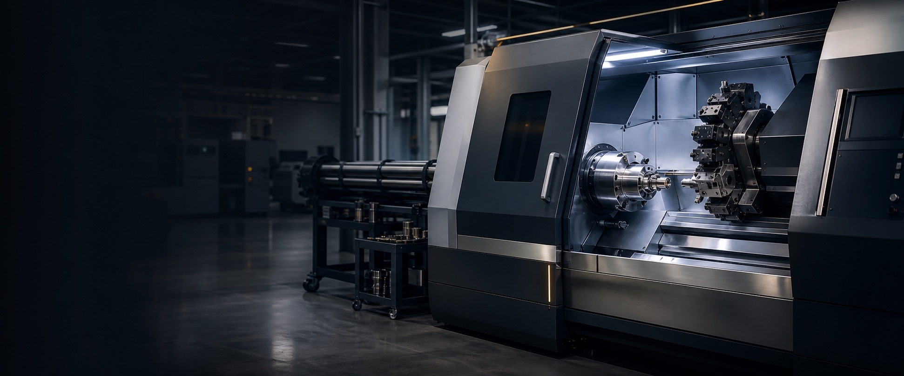

![Z&Z STROTEC Logo]()

Your Taiwan CNC Machine Tool Partner
Machines, spindles, bar feeders, tooling & precision parts — sourced, exported, and supported worldwide.
| Term | Full Name | Risk Transfer | Who Pays Freight | Best For |
|---|---|---|---|---|
| EXW | Ex Works | At seller's factory gate | Buyer pays everything | Buyer has own forwarder; domestic pickup |
| FCA | Free Carrier | When handed to carrier | Buyer pays from named point | Container shipments; replaces FOB for containers |
| FOB | Free On Board | When goods cross ship's rail | Buyer pays ocean + destination | Taiwan machine tool exports — most common |
| CFR | Cost and Freight | When loaded on vessel | Seller pays ocean freight | Seller arranges shipping, buyer arranges insurance |
| CIF | Cost, Insurance & Freight | When loaded on vessel | Seller pays freight + min. insurance | Seller controls shipping; buyer may want own insurance |
| DAP | Delivered at Place | At named destination | Seller pays all to destination | Door-to-door; buyer handles import duties |
| DDP | Delivered Duty Paid | At buyer's premises | Seller pays everything incl. import duty | Maximum seller responsibility; rare in machine tools |
Z&Z STROTEC exports worldwide — wherever there is no appointed local agent yet, we can supply you directly. The countries below are simply the key markets we have profiled in detail. 🟢 Full Service markets have local sales & after-sales agents; 🔵 Parts Supply markets receive components and spare parts. Don't see your country? Just ask.
Fill in the form below and our team will respond within 1–2 business days.
We serve customers in Korea, Brazil, Switzerland, Argentina and worldwide.
* Required fields. Your information is kept strictly confidential and will only be used to respond to your inquiry. We do not share your contact details with third parties.
Please check your email (including spam folder) for our reply.
深度技術分析與實務案例，由 Z&Z STROTEC 專業團隊撰寫。
更多專家專欄陸續刊出。如有刊登合作需求，歡迎。
歡迎廠商刊登產品資訊 & 業務合作洽詢
萬洋國際有限公司（Z&Z STROTEC）經營一個面向國際市場的工具機知識平台，服務對象涵蓋全球工具機市場的進口商、工程師及採購人員。刊登合作不限工具機相關產業，舉凡工具機零組件、精密零件、CNC 周邊、倉儲設備、油冷氣設備、高壓液壓系統、氣壓元件，或任何與製造業相關的產品與服務皆歡迎洽詢。
合作方式
✦ 所有刊登內容須經萬洋國際審核，確保符合平台專業定位。
✦ 費用及合作形式依個案洽談，歡迎先來信索取媒體資料（Media Kit）。
✦ 適合廠商類型（不限）：車床廠、料機廠、刀具廠、零組件供應商、CNC 控制器、倉儲設備、油冷氣設備、高壓系統、氣壓元件等工業相關產品皆可。
REACH BUYERS ACROSS KOREA, BRAZIL, SWITZERLAND & ARGENTINA
Z&Z STROTEC operates a professional B2B knowledge hub for the CNC machine tool industry, serving importers, engineers, and procurement teams across global machine-tool markets. We welcome advertising partners from all industrial sectors — machine tool components, precision parts, bar feeders, CNC accessories, as well as warehousing equipment, oil cooling systems, high-pressure hydraulics, pneumatics, and any product relevant to manufacturing or industrial operations.
Partnership Options
All placements are reviewed and approved by Z&Z STROTEC. Pricing and format are discussed on a case-by-case basis. Contact us to receive our media kit.
STAY UPDATED — EXPERT COLUMNS & INDUSTRY KNOWLEDGE
Subscribe to receive email notifications when we publish new Expert Column articles or add major Knowledge Library updates. We send only when there is real content — no spam, no marketing blasts.
Your email is used only to send article notifications. Unsubscribe anytime. We do not share your contact details with third parties.
訂閱專家專欄與知識庫更新通知
訂閱後，每當我們發布新的專家專欄文章或重要知識庫更新，您將第一時間收到 Email 通知。我們只在有真正內容時發送，不寄廣告信。
您的 Email 僅用於發送文章通知，可隨時取消訂閱。我們不會與第三方共享您的聯絡資訊。
전문가 칼럼 & 지식 라이브러리 업데이트 구독
새로운 전문가 칼럼 또는 지식 라이브러리 업데이트가 있을 때 이메일로 알림을 받아보세요. 실제 콘텐츠가 있을 때만 발송하며, 광고성 메일은 보내지 않습니다.
이메일은 기사 알림 발송 목적으로만 사용됩니다. 언제든지 구독을 취소할 수 있습니다.
| # | English | 中文 | 한국어 |
|---|
From inquiry to delivery — full trade support
Z&Z STROTEC is your trading partner in Taiwan for CNC machine tools, bar feeders, precision parts and components. We don't just sell machines — we walk international buyers through the whole sourcing process, so you can buy from Taiwan with confidence even from the other side of the world.
萬洋國際是您在台灣的貿易夥伴，提供 CNC 工具機、送料機、精密零件與零組件。我們不只是賣機台，更協助國際買家走完整個採購流程——讓您即使身處世界另一端，也能安心向台灣採購。
Z&Z STROTEC은 CNC 공작기계, 송료기(바피더), 정밀 부품을 취급하는 대만 현지 무역 파트너입니다. 단순히 기계를 판매하는 데 그치지 않고, 해외 바이어가 소싱부터 구매까지 전 과정을 마칠 수 있도록 지원합니다.
🔍 Inquiry & Quotation
Tell us the machine, spec, application or a part number — we find the right Taiwanese manufacturer and give you a clear quotation.
詢價與報價 · 견적 문의
告訴我們需求，我們找到合適的台灣製造廠並提供清楚報價。
🛒 Remote Ordering
No need to come to Taiwan to place an order. We handle factory communication, spec confirmation and order management locally on your behalf.
遠端訂貨 · 원격 주문
不必親自到台灣也能下單，我們代您與工廠溝通、確認規格。
⚙️ Trial Run & Inspection
Before shipment we can arrange a machine trial run (test cut) and inspection at the factory, confirming the machine meets spec before it leaves Taiwan.
試車與驗機 · 시운전 및 검사
出貨前協助安排工廠端試車與驗機，符合規格才出口。
📦 Export & Logistics
We arrange export documents, packing, sea freight and marine insurance, and advise on container selection and Incoterms.
出口與物流 · 수출 및 물류
協助出口文件、包裝、海運與海上保險，並就貿易條件提供建議。
🏭 Visit Taiwan · Factory Tour
Planning to come to Taiwan? We introduce manufacturers in the Taichung area and support your visit with trilingual (EN / 中 / 한) assistance.
來台採購・工廠參訪 · 대만 방문 구매
介紹台中地區製造廠商，來訪期間提供三語協助。
🛠️ After-Sales Support
Machine sales include installation and after-sales service, currently served through local agents in Korea, Brazil, Switzerland and Argentina. For other markets we gladly supply parts and components.
售後支援 · 애프터서비스
含安裝與售後服務，透過在地代理商服務韓國、巴西、瑞士與阿根廷。
All services are handled in English, 中文 or 한국어. Tell us what you need through the inquiry form and we'll take it from there.
Z&Z STROTEC CO., LTD. · 萬洋國際有限公司
Founded in 2002, Z&Z STROTEC is a Taiwan-based trading partner for CNC machine tools, bar feeders, precision parts and components — based in Tanzi District, Taichung, in the heart of Taiwan's precision-machinery corridor. We connect international buyers with the right Taiwanese manufacturers and support the entire process from inquiry to delivery, in English, 中文 and 한국어.
萬洋國際成立於 2002 年，座落於台灣精密機械走廊核心的台中潭子，是 CNC 工具機、送料機、精密零件與零組件的貿易夥伴。我們為國際買家媒合合適的台灣製造廠，並以英文、中文、韓文三語，協助從詢價到交機的完整流程。
2002년 설립된 Z&Z STROTEC은 대만 정밀기계 산업의 중심지인 타이중 탄쯔구에 위치한 CNC 공작기계·송료기·정밀 부품 무역 파트너입니다. 해외 바이어와 적합한 대만 제조사를 연결하고, 영어·중국어·한국어로 견적부터 납품까지 전 과정을 지원합니다.
年產業經驗 / 업력
市場情報 / 시장 가이드
術語收錄 / 용어
📍 Where we are
Tanzi District, Taichung, Taiwan
台灣 · 台中潭子
Inside the Taichung precision-machinery cluster — lathe, machining-centre, bar-feeder and component makers within a short radius.
🌐 Markets we serve
Local sales & after-sales agents in Korea, Brazil, Switzerland, Argentina. Parts & component supply to Vietnam, India, Mexico, Poland and more.
🗣️ How we work
Trilingual EN / 中文 / 한국어. End-to-end: sourcing, quotation, trial run, export documents, insurance and after-sales — one partner, the whole way.
A knowledge hub, not just a catalogue
Alongside trading, we maintain a trilingual knowledge library, expert columns and a 196-term EN / 中文 / 한국어 terminology reference, so buyers can understand exactly what they're sourcing.
除了貿易，我們也經營三語知識庫、專家專欄與 196 個術語的中英韓對照表，讓買家清楚理解採購內容。